Blocuri de text si atributele etichetei BODY
Pentru setarea unora dintre caracteristicile textului afisat in paginile web
pot fi utile atribute ale etichetei BODY. Partea proasta este ca, aceasta ar insemna ca
tot textul din pagina web ar trebui sa arate la fel!... Partea buna este ca HTML pune la dispozitie
si alte instrumente pentru formatarea caracterelor, dupa cum se va vedea in continuare.
Din punct de vedere al blocurilor de text, cele mai utile atribute ale etichetei BODY sunt:
a)atributul bgcolor="culoare"
Valoarea atributului bgcolor (culoare de fundal) pot fi:
-un nume valid de culoare in limba engleza ("red", "green", yellow", "lightgreen", etc.)
-un cod hexazecimal al culorii cu sintaxa "#RRGGBB" unde semnul # indica faptul ca urmeaza
un cod hexazecimal. Semnificatia codului este urmatoarea: RR (RED)sunt doua cifre
hexazecimale care determina gradul de rosu al culorii, GG (GREEN) indica gradul de verde
iar BB (BLUE) gradul de albastru. valorile acestor cifre in sistemul hexazecimal pot fi 0,1,2,
3,4,5,6,7,8,9,a,b,c,d,e si f, adica cele 16 "cifre" ale sistemului hexazecimal. Iata cateva
exemple:
"#ff0000"-reprezinta culoarea rosie (maximum rosu, nimic verde si nimic albastru
"#00ff00-reprezinta culoarea verde, fara amestec de rosu sau albastru
"#0000ff"-reprezinta culoarea albastra, fara amestec de rosu sau verde
"#000000"-reprezinta culoarea neagra
"#ffffff"-reprezinta culoarea alba, amestec maxim de rosu, verde si albastru
...In felul acesta pot fi definite 65536 culori!!!
Iata cateva exemple si efectele lor:
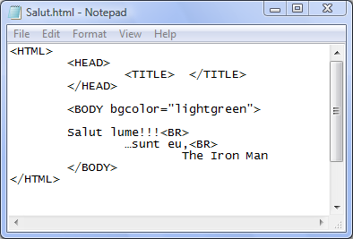
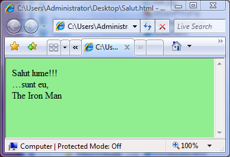
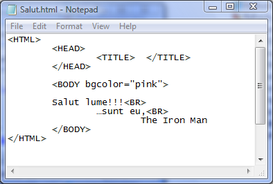
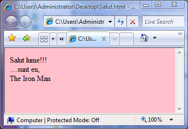
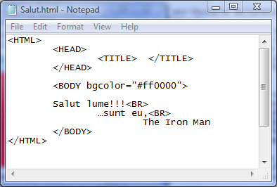
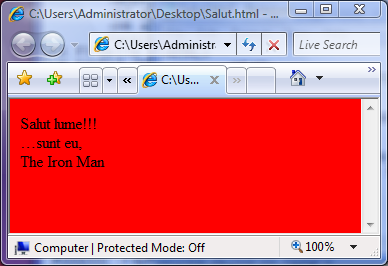
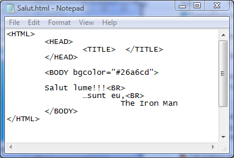

b)atributul text="culoare"
Atributul text seteaza prin valorile sale culoarea caracterelor afisate in pagina web.
Valorile acestui atribut sunt, ca si in cazul etichetei bgcolor, sau un nume valid de culoare
in limba engleza, sau un cod hehazecximal al culorii cu sintaxa #RRGGBB, asa cum a fost aratat mai sus....
Iata cateva exemple in care a fost setata atat culoarea de fundal cat si culoarea caracterelor:
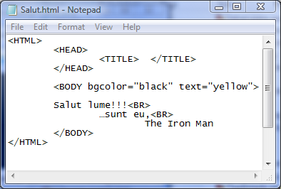
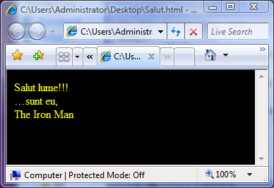
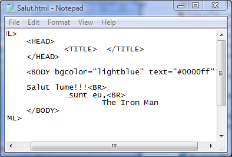
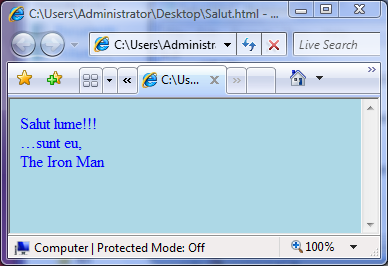
c)atributul background="adresa"
Atributul background defineste o imagine de fundal pentru pagina web, valoarea atributului fiind chiar
adresa fisierului imagine. In cazul in care fisierul imagine este chiar in acelasi dosar cu
pagina web este suficient ca adresa sa se rezume la numele fisierului. In cazul in care
fisierul imagine este situat pe alt disc, trebuie specificata unitatea(partitia), structura
de subdosare pana la dosarul parinte al imaginii si terminand cu numele fisierului.
background="disc:\Dosar1\Subdosar2\.......\SubdosarN\fisier.png"
Iata un exemplu:
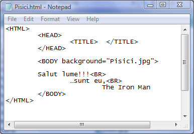
Click aici pentru a deschide pagina web Pisici.htm
In cazul in care dimensiunile pozei de fundal sunt mai mici decat fereastra Internet Explorer,
poza se va multiplica atat pe latime cat si pe inaltime, astfel incat intreg fundalul paginii
web sa fie ocupat de imagine...
Iata si cateva exemple de formate de imagini suportate de browsere:
- GIF (Graphics Interchange Format) cu extensia .gif;
- JPEG (Joint Photographic Experts Group) cu extensia .jpeg sau .jpg;
- BMP (BitMap) cu extensia .bmp;
- PNG (Portable Network Graphics) cu extensia .png;
- etc. ...........
d)Setari de pozitionare fata de merginile paginii web
Atributele care definesc pozitionarea textului fata de marginea superioara sau stanga a paginii
web sunt topmargin si respectiv leftmargin, cu sintaxa:
topmargin="n"
leftmargin="m"
...unde m si n sunt sau doua numere reprezentand distanta in pixeli, sau procente din dimensiunea
corespunzatoare a ecranului.
Iata mai jos cateva exemple de cod si efectul lor in pagina web:
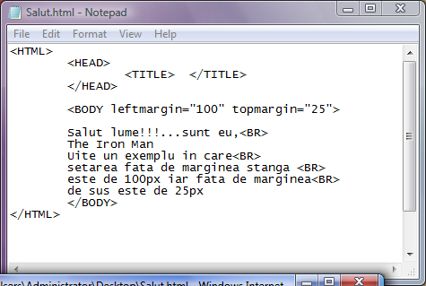
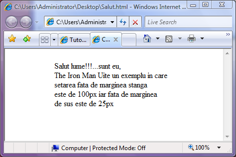
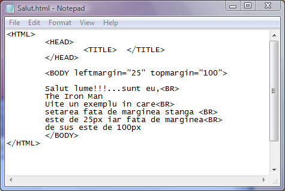
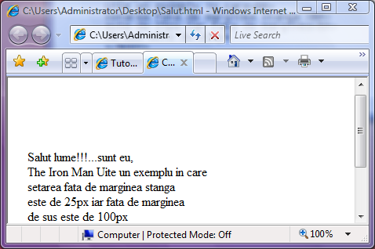
Inapoi la Blocuri de text...